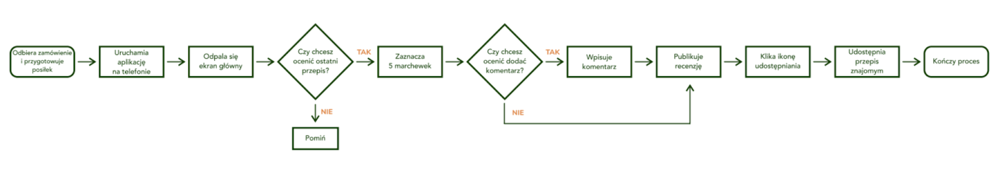
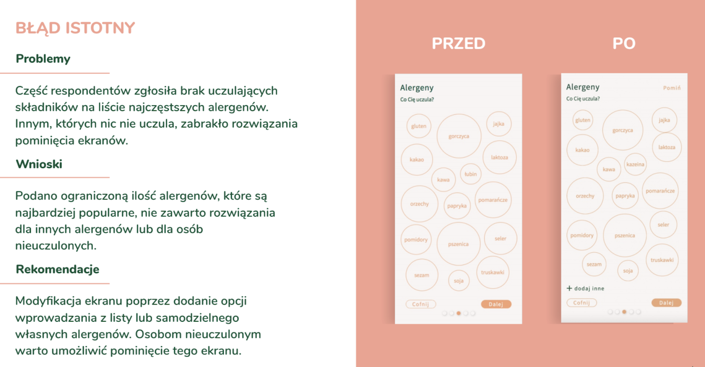

- Typ projektu: Koncept
- Czas trwania: 9 miesięcy
- Narzędzia: Axure, Google Docs, Mural
- Metodologia: User centered design, persony, badania potrzeb,
modelowanie, prototypowanie, testy użyteczności
Projekt Green Machine powstał podczas studiów na kierunku UX/Product Design jako owoc 9-cio miesięcznej współpracy 5-cio
osobowej grupy studentów. Finalnym produktem jest przygotowany przez nas interaktywny prototyp aplikacji mobilnej.
Wykonana praca obejmuje cały proces powstawania produktu cyfrowego: od etapu burzy mózgów (wybór tematu) i badań potrzeb
poprzez strategię, modelowanie, prototypowanie aż po testy użyteczności. Ostateczny produkt nie jest doskonały - jego
forma zmieniała się w trakcie trwania studiów. Mimo to, warto pokazać włożoną w niego pracę i zastosowanie UX-owej
metodologii.
Praca zaczęła się od burzy mózgów i ostatecznie głosem większości postanowiliśmy zainspirować się Netflixowym dokumentem
“The Game Changers” i stworzyć aplikację dla wegańskich kulturystów, jednak by nie ograniczać grona odbiorców
postanowiono, aby docelową grupą byli wegetariańscy i wegańscy sportowcy. Ostatecznie wyzwanie projektowe przybrało
następującą formę:
Naszym projektem chcemy ułatwić możliwość wdrożenia diety wege dla wegańskich sportowców z uwzględnieniem własnych
preferencji.
Dla kogo: osoby uprawiające sport/osoby aktywne fizycznie - weganie, którzy dbają o zbilansowaną i konkretną dietę.
Potrzeba: poprawa doświadczeń związanych z komponowaniem diety wegańskiej z uwzględnieniem zbilansowanych posiłków pod
kątem pożądanego efektu (siła/rzeźba/regeneracja).
Badania Potrzeb
Obszary problemowe poruszone podczas badań:
- poznanie diety, nawyków i preferencji żywieniowych
- zrozumienie różnic w organizacji diety w dni treningowe i bez treningu
- poznanie zależności między uprawianym sportem a rodzajem zapotrzebowania dietetycznego
- określenie istoty i sposobów obliczania mikro- i makroelementów w posiłkach
-
zidentyfikowanie źródeł informacji na temat przepisów, wykorzystywanych narzędzi i źródła wiedzy na temat diety
wegańskiej i wegetariańskiej
Metodologia
- Desk research - analiza danych zastanych, statystyk, publikacji tematycznych, artykułów naukowych
- IDI - indywidualny wywiad pogłębiony bazujący na wcześniej przygotowanym scenariuszu zawierającym pytania badawcze
-
macierz pytań i odpowiedzi - zgodnie ze scenariuszem stworzono macierz, w której zamieszczono odpowiedzi każdego
respondenta na każde zadane pytanie oraz obserwacje, co ułatwiło dokonanie analizy i interpretacji
Rekrutacja respondentów odbyła się za pomocą mediów społecznościowych głównie w grupach Facebookowych dla wegetarian i
wegan oraz sportowców. Ogłoszenie zawierało ankietę (screener) która na celu miała odsiać osoby nie pasujące do
kryteriów.
Kryteria rekrutacji respondentów:
- aktywność sportowa uprawiana minimum dwa razy w tygodniu (w tym uprawianie sportu w sposób profesjonalny)
- dieta wegańska lub wegetariańska
- samodzielne przygotowywanie posiłków
- dbałość o zbilansowaną dietę
Analiza i Rekomendacje
Persony
Joanna potrzebuje:
- prostych i szybkich przepisów na potrawy, które są jednocześnie samczne i łatwe w przechowywaniu
- przepisów dedykowanych osobom ćwiczącym, intuicyjnych, łatwych do “przeskalowania”
- rzetelnego rozkładu posiłków w trakcie tygodnia i dnia, tak, aby zachować bilans dietetyczny i energetyczny
- lepszej organizacji zakupów na tydzień
- praktycznych porad jak przejść na dietę wegetariańską, podstaw dietetycznych dla wegetarian na temat zbilansowanej i różnorodnej diety
- informacji o składzie potraw na wynos
- rekomendacji i możliwości oceny nowych przepisów
Strategia Produktu
W ramach tego etapu należało przygotować analizę inspiracji i konkurencji, model biznesowy, wybrać platformę na którą
dedykujemy narzędzie oraz ustalić co wchodzi w zakres MVP.
Value Proposition Canvas
W ramach VPC opisano jakie zadania mają do wykonania nasze persony, jakie mają bolączki w związku z tymi zadaniami oraz
korzyści. Na podstawie tak stworzonego profilu użytkownika należało wypracować produkt/usługę stanowiącą naszą
propozycję wartości wraz z wyodrębnieniem elementów uśmierzających bolączki oraz budujących korzyści naszej persony.
Customer Journey Map
Analiza Inspiracji i Konkurencji
Pracę zaczęto od zebrania inspiracji w 3 istotnych dla projektu obszarach: składanie zamówienia, planowanie oraz przepisy.

Następnie wybrano 5 najważniejszych dla nas inspiracji wraz z uzasadnieniem:
-
Kooperatywy spożywcze, bazary ze zdrową żywnością - możliwość zamawiania i odbierania zdrowej żywności prosto od
rolnika z ekologicznych upraw - świetna alternatywa dla drogich sklepów ekologicznych, hipermarketów, dodatkowym atutem
jest szczegółowa informacja na temat produktu udzielona przez farmerów.
-
BBCgoodfood - możliwość opiniowania/oceniania przepisów, zapisania ich, tworzenia listy zakupów (skonfigurowana z
możliwością zakupu w wybranym markecie), info o czasie przygotowania, wielkości porcji, poziomu trudności.
-
Chalkboard w kuchni - możliwość zamieszczania notatek dla siebie i pozostałych domowników - komfortowe rozwiązanie,
kreatywna forma prezentacji ważnych informacji w miejscu widocznym dla każdego, zapewnia szybką komunikację w ciągu
dnia.
-
Jamie Oliver - 5 składników - koncepcja kuchni przystępnej dla każdego, świeżej i ekologicznej. Jamie's 30-Minute Meals
czy 5 Ingredients - Quick & Easy Food to przede wszystkim przepisy na proste i szybkie dania z zastosowaniem
nieskomplikowanych technik oraz szeroko dostępnych składników.
-
Zeszyt z przepisami zbieranymi od lat - funkcjonalny i sprawdzony zbioru przepisów na ulubione potrawy, które tak
zasmakowały, że zdecydowaliśmy się je zapisać :)
Na koniec przygotowano zestawienie konkurencyjnych dla nas produktów:

Jako główną metaforę produktu wybrano Spotify - projekt miał odzwierciedlać tworzenie własnych playlist w aplikacji
Green Machine grupując przepisy w playlisty, możliwość ich współtworzenia oraz udostępniania, dodatkowo - tak jak w
Spotify - strona główna miała być mocno spersonalizowana pod kątem podpowiadanych przepisów.
MVP
Wraz z koniecznością zawężania funkcjonalności i znalezienia balansu pomiędzy MVP a MLP zdecydowano się na 5
podstawowych funkcji aplikacji:
Model Biznesowy
Jako model biznesowy przyjęto generowanie zysków ze sprzedaży produktów oraz reklam w aplikacji. Korzystanie z aplikacji
jest darmowe.
Modelowanie
Na etapie modelowania przygotowano scenariusze użytkownika wraz z diagramami user flow oraz wireflow. Pracę podzielono
tak, aby każdy przygotował scenariusz wraz z odpowiadającym mu user flow i wireflow.
User flow - wireflow 1
User flow - wireflow 2
User flow - wireflow 3
User flow - wireflow 4

User flow - wireflow 5
Prototypowanie
Korzystając z oprogramowania Axure 9 przygotowano interaktywny prototyp aplikacji.
Testy użyteczności
Po przygotowaniu prototypu przystąpiono do testów użyteczności aplikacji w ramach których należało skonstruować plan i
scenariusz badania, macierz obserwacji oraz przeprowadzić analizę jednostkową, a następnie krzyżową by zinterpretować
wypowiedzi respondentów i na tej podstawie zarekomendować zmiany w prototypie.
Metodologia
Testy użyteczności przeprowadzone zostały metodą moderowanych testów zadaniowych podczas których weryfikowano postawione
sobie cele i problemy badawcze. Testy odbyły się zdalnie przy użyciu platformy Google Meet wraz z nagraniem dźwięku i
ekranu smartfona na którym respondenci wykonywali zadania.
Problemy i ich rangowanie
Zaobserwowanym problemom nadano następujące rangi:
- krytyczne - uniemożliwiające lub poważnie utrudniające pracę, wywołując frustrację
- istotne - utrudniające pracę w aplikacji w stopniu wysokim
- drobne (średnie lub niskie) - pewien dyskomfort w realizacji procesów w aplikacji


Prototyp po zmianach
Prototyp przedstawiono wraz instrukcją w krokach przygotowaną na podstawie scenariuszy użytkownika z etapu modelowania.
Podsumowanie
Czego się nauczyłam?
-
że jeśli coś wydaje się naciągane to prędzej czy później problem będzie powracał (w tym wypadku podczas badań potrzeb
nie zauważono za bardzo korelacji między sportem a dietą wegańską/wegetariańską a mimo to kontynuowaliśmy z taką
dokładnie grupą docelową, co przysporzyło wiele zmian koncepcji na etapie strategii)
-
że moje doświadczenia nie są takie same jak doświadczenia respondentów i nie można nadinterpretować obserwacji z badań
-
że iteracje danego etapu są ok :) osobiście chętnie powtórzyłabym etap badań potrzeb nie wchodząc w temat sportu ale też
zadając lepsze, bardziej pogłębiające pytania dotyczące gotowania, dotyczące kontekstu poszukiwania przepisów, samego
procesu przeszukiwania internetu w celu inspiracji kulinarnych itp.
-
że współpraca w zespole UX-owym nie jest taka prosta, ale warto mieć własne zdanie i je głośno wyrażać, bo im więcej
perspektyw i różnych spojrzeń na dany problem tym lepiej.